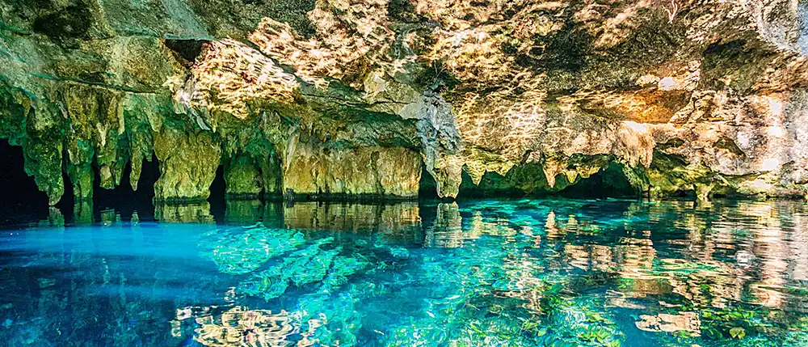

Home Page

Welcome to Paradise: A family history
The sign at the end of the winding coastal road read: *Welcome to Paradise*. The paint was slightly faded, but the Delacruz family refused to touch it. “It's part of the charm,” Elena always said For three generations, the Delacruz family had run the small seaside resort tucked between cliffs and turquoise water. It wasn't luxurious—no marble floors or infinity pools—but guests kept coming back. They came for Mateo's sunrise fishing trips, for Rosa's cinnamon-sweet breakfasts, and for little Lucas, who greeted every arrival like a long-lost friend. This summer, things were different. Bookings had slowed, and a glossy new resort had opened down the coast. One evening, the family gathered on the porch, the ocean humming below. “What if paradise isn't enough anymore?” Lucas asked quietly. Elena smiled, brushing sand from her hands. “Paradise isn't the place,” she said. “It's how people feel when they're here.” The next morning, they worked harder than ever—not to compete, but to care. They shared stories with guests, cooked together, laughed louder. By the end of the week, something changed. Visitors lingered longer. They wrote notes, left hugs, promised to return. And as the sun dipped low, the old sign stood proudly, weathered but true. *Welcome to Paradise*, it said. And for those who stayed, it really was.
Who are we looking for?
Craving a getaway without draining your bank account? *Welcome to Paradise* is your spot. Tucked along a stunning coastline, our family-run resort offers cozy rooms, home-cooked meals, and unforgettable ocean views—all at prices that won't wreck your budget. Spend your days exploring the water, making new friends, or just unwinding under the sun, and your nights swapping stories by the shore. No luxury fluff, just real experiences, good vibes, and memories you'll actually keep. Paradise doesn't have to be expensive—it just has to feel right.
Most popular destination
- Tulum, Mexico - Think turquoise water, soft white sand, and a laid-back, boho feel. It's popular with young travelers for its beach hostels, affordable eats, and mix of relaxation and nightlife.
- Nassau, Bahamas - Crystal-clear water, warm weather year-round, and easy access from many U.S. cities. You can keep it budget-friendly with local guesthouses and public beaches.
- San Juan, Puerto Rico - A great mix of beaches, colorful historic streets, and no passport required for U.S. travelers. It's often one of the most affordable tropical getaways with tons of culture.